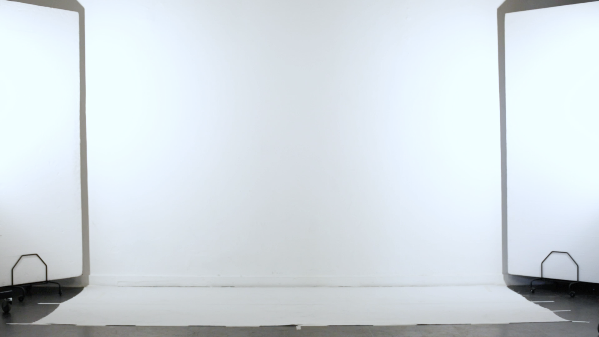

Physical Sourcing
IMD Project by Katla, Marieke, Radina and Matas
Due to increasing accessibility to the internet, a new way of working has evolved.
People are extending computational systems by offering their bodies, their senses,
and their cognition; and specifically, bodies and minds that can be easily plugged
in, rewired, and discarded. They become a so-called column inside the stack. Large
corporations profit from transcription business built upon free labour. Internet
labour can be fragmented into micro tasks, which becomes invisible and free.
Physical outsourcing emphasizes the value of human imperfections and flaws since it is a characteristic unique to humans. It differentiates us, as Humans, from increased optimization and artificial intelligence. Physical Outsourcing was live streamed, and was completed through the collection of physical micro tasks from multiple contributors and integrated into this website. The tasks involved translation, illustration and performance in relation to a given text. A web drawing tool was then proposed for audience interaction, while watching the live stream. The results were compared with material previously collected.